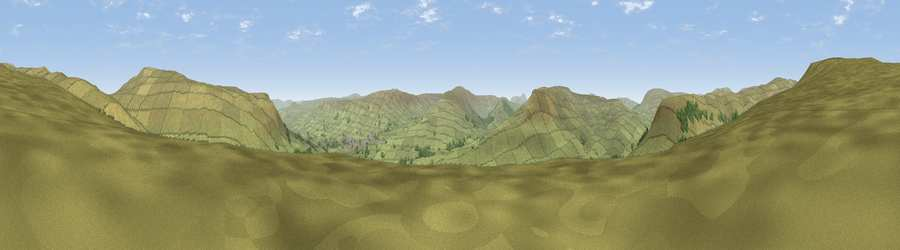

Viewpoint near Cotterdale
#14333 in England · top 39% of its area beats it · near CotterdaleWhere it is
The exact computed spot (SD 84625 93125). Click the marker for map links.
The view, rendered

A 360° render of this exact spot computed from the terrain model, tree cover and land cover — summer colours, afternoon light, calibrated against photographs of famous viewpoints. Real trees, hedges and buildings will differ in detail.
The panorama
Grey silhouette: terrain skyline in each direction (720 bearings, Earth curvature and refraction included). Dashed green: skyline with trees (+15 m) and buildings (+8 m) as obstacles. Blue strip: how far the ground is visible on each bearing.
Where the view opens
Wedge length = distance to the farthest visible ground on that bearing (vegetation-aware). Rings at 10, 25 and 50 km.
What fills the view
94% grassland · 6% woodland
Angular shares of the visible panorama (visual magnitude), not map area. Landscape diversity 0.10 (0–1 Shannon).
Key numbers
More beautiful places nearby
The staircase of upgrades: each row has a higher view potential than everything closer. Driving times are estimates from straight-line distance, calibrated against real road routing — check an actual route before setting out.
| Place | Direction | Drive | Score |
|---|---|---|---|
| Viewpoint near Cotterdale | NNW · 1 km | ~3 min | 61.6 |
| Viewpoint near Appersett | SW · 3 km | ~7 min | 62.4 |
| Viewpoint near Appersett | ENE · 3 km | ~8 min | 66.5 |
| Viewpoint near Cotterdale | ENE · 4 km | ~9 min | 74.4 |
| Viewpoint c10024_7603 | NNW · 9 km | ~18 min | 76.9 |
| Whernside | SW · 16 km | ~28 min | 79.9 |
| Warton Crag | WSW · 41 km | ~60 min | 83.2 |
| Viewpoint near Finsthwaite | W · 46 km | ~66 min | 84.7 |
54.33345, -2.23795 · source: screening · position refined by local search. Computed location — check access rights before visiting.